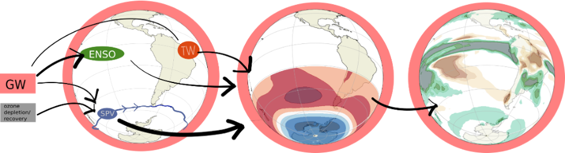

Teleconnections and Regional Climate Change

Adaptation to climate change requires understanding persistent changes in regional climate characteristics -such as mean conditions, extremes, or variability- within specific geographic areas over periods of decades or more. The wide range of regional climates, time scales, and adaptation needs makes this a problem of high complexity.
Variability and change in regional climate is in great part determined by geographical location and local processes, however, it also represents the local expression of variability and change in large-scale remote drivers (also known as teleconnections), the feedback between them and their interaction with local processes. These remote drivers are influenced by internal processes like oceanic and atmospheric variability or from external forcings, including solar variations, volcanic activity, land-use change, and anthropogenic greenhouse gas emissions. Moreover, these anthropogenic forcings also drive processes at local scales. The interaction of large-scale and local processes shape regional climate patterns.
Due to the many possible drivers of variability and change, quantifying the interplay between internal modes of decadal variability and any externally forced component is crucial in attempts to attribute causes of regional climate changes. A regional climate signal could arise purely due to some anthropogenic influence or conversely, entirely due to internal variability, but it is most likely the result of a combination of both. Decomposing these signals and their associated uncertainty is key to producing useful information at the regional scale.
In our research group, we focus on how variability and change in large-scale climate dynamics affect regional climates. We employ storyline approaches, weather regimes, causal inference methods and rare event algorithms to investigate multiple regions, which include Europe, southern South America, the Sahel, the Somali Peninsula, and Cape Town. Through this, we aim to better understand regional impacts of climate change and improve actionable climate information. This information is often distilled using a co-production process that integrates scientific knowledge with user context, values, and decision-making needs.
Publications:
F. R. Spuler, M. Kretschmer, Y. Kovalchuk, Yevgeniya, M. Balmaseda, Magdalena Alonso T. G. Shepherd, Identifying probabilistic weather regimes targeted to a local-scale impact variable, 2024, Environmental Data Science, 3, 2634-4602, http://dx.doi.org/10.1017/eds.2024.29.
Kretschmer, M., S. V. Adams, A. Arribas, R. Prudden, N. Robinson, E. Saggioro, and T. G. Shepherd, 2021: Quantifying Causal Pathways of Teleconnections. Bull. Amer. Meteor. Soc., 102, E2247–E2263, https://doi.org/10.1175/BAMS-D-20-0117.1.
Mindlin, J., C. S. Vera, T. G. Shepherd, and M. Osman, 2023: Plausible Drying and Wetting Scenarios for Summer in Southeastern South America. J. Climate, 36, 7973–7991, https://doi.org/10.1175/JCLI-D-23-0134.1.